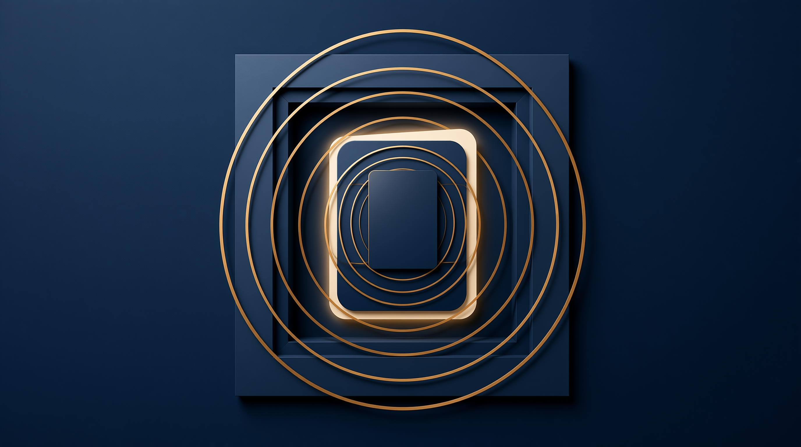

金库隐喻 · 功能与边界并存
Issue
#67002
Labels
risk-message-deliveryblast-moderate
Priority
P3
Comments
14 样本最高
「#67002 是教科书样本：用户在索取 MCP reload 功能的同时显式要求安全边界，这是消费侧信任的可观察信号，也是从「能用」到「好用」的跃迁证据。」
观察要点
06
01
Issue 标题
feat(api): add safe MCP reload control endpoint02
风险标签
risk-message-delivery + blast-moderate03
组件 / 优先级
gateway / P3
04
讨论热度
comments 14 —— 样本最高
05
关键观察
用户主动要求「安全的重载端点」——要能力的同时显式要安全收口。
06
制度含义
从「能用」到「好用」的关键跃迁——消费侧信任的强信号。